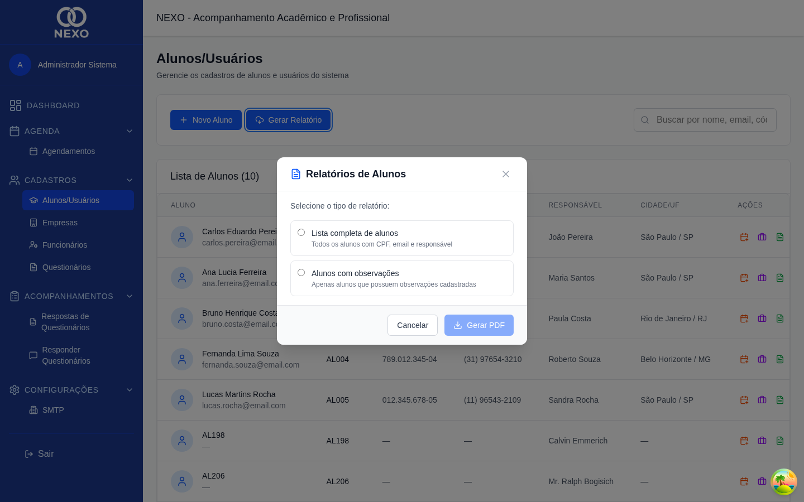
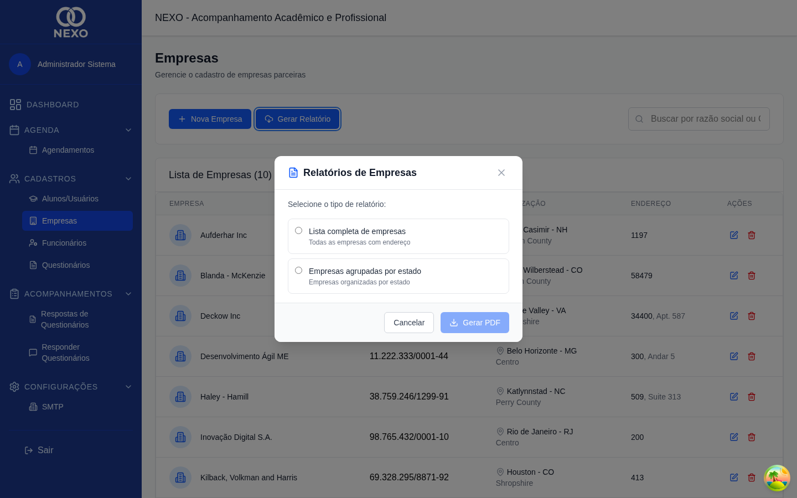
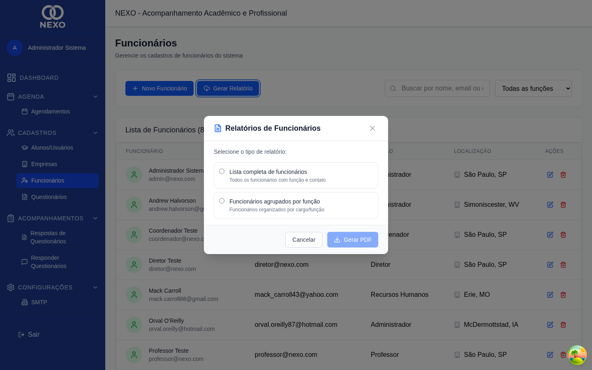
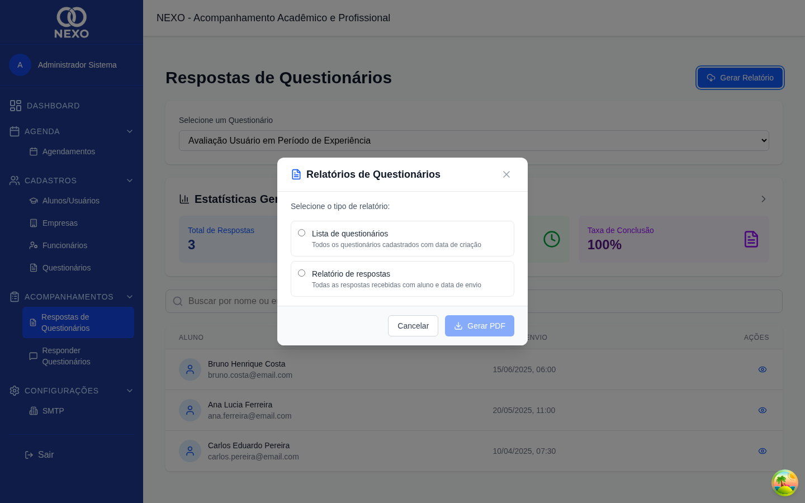

Relatórios em PDF
Cada cadastro do NEXO oferece um botão de relatório que gera um PDF pronto para imprimir ou enviar. O acesso a cada relatório acompanha a permissão da lista correspondente.
Como gerar um relatório
-
Abrir a lista correspondente
Acesse a lista — por exemplo, Alunos, Empresas ou Respostas.
-
Clicar no botão de relatório
O ícone de nuvem com seta para baixo fica no canto superior da lista. Ele abre um modal com as opções disponíveis de relatório.

Modal de relatórios da lista de Alunos. 
Modal de relatórios da lista de Empresas. 
Modal de relatórios da lista de Funcionários. 
Modal de relatórios da lista de Respostas. -
Escolher o tipo de relatório
Cada lista oferece opções específicas — por exemplo, no cadastro de empresas você pode gerar a lista completa ou agrupada por estado.
-
Baixar o PDF
Clique em "Gerar Relatório". O PDF é baixado automaticamente pelo navegador.
Use a busca ou os filtros da lista antes de gerar o relatório: o PDF respeita o que estiver sendo exibido na tela.